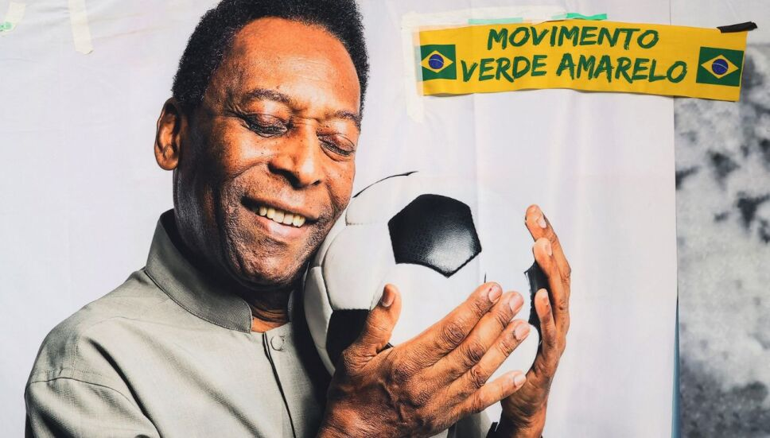
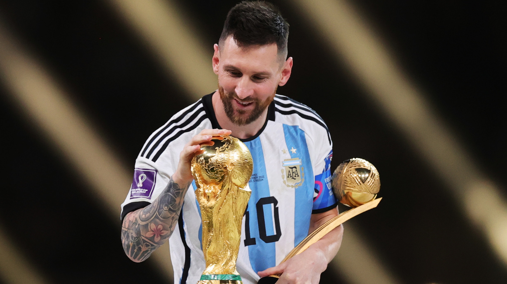
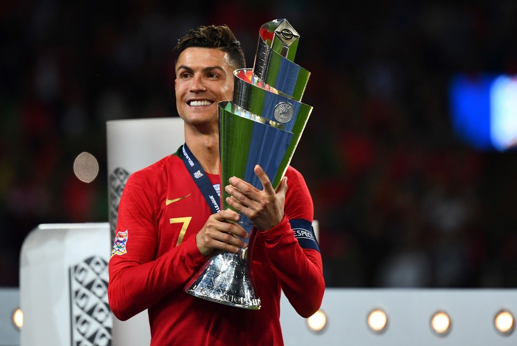

Edson Arantes do Nascimento, más conocido como Pelé, es un exfutbolista brasileño considerado uno de los mejores jugadores de la historia del fútbol. Nació el 23 de octubre de 1940, en Três Corações, Brasil.

Inicio de Carrera: Pelé comenzó a jugar al fútbol desde joven y llamó la atención por sus habilidades extraordinarias. Hizo su debut profesional a la edad de 15 años con el Santos FC en Brasil.
Carrera Internacional: Pelé hizo su debut con la selección brasileña a los 16 años en 1957. Participó en cuatro Copas del Mundo, ganando tres de ellas. Es conocido por su destacada actuación en la Copa del Mundo de 1970.
Éxito con el Santos FC: Pelé jugó gran parte de su carrera en el Santos FC, donde ganó numerosos títulos, incluyendo la Copa Libertadores y la Copa Intercontinental.
Éxito en el Fútbol Europeo: En 1971, Pelé se unió al club New York Cosmos en la North American Soccer League (NASL), donde jugó hasta su retiro en 1977. Su presencia ayudó a popularizar el fútbol en los Estados Unidos.
Logros Individuales: Pelé fue galardonado con el Balón de Oro como el mejor jugador del mundo en 1958, 1962 y 1970. Anotó más de 1,000 goles a lo largo de su carrera, un logro asombroso.
Retiro y Legado: Pelé se retiró oficialmente del fútbol en 1977, dejando un legado duradero como uno de los mejores futbolistas de todos los tiempos.
Diego Armando Maradona fue un legendario futbolista argentino, considerado uno de los mejores de todos los tiempos. Nació el 30 de octubre de 1960, en Lanús, Buenos Aires, Argentina.
Inicio de Carrera: Maradona comenzó su carrera profesional con Argentinos Juniors a los 16 años. Rápidamente se destacó por sus habilidades excepcionales y su estilo de juego único.
Éxito con Boca Juniors: Después de jugar para Barcelona en España, Maradona regresó a Argentina para unirse a Boca Juniors, donde ganó varios títulos, incluida la Copa Libertadores.
La "Mano de Dios": En el Mundial de 1986, Maradona anotó uno de los goles más famosos de la historia, conocido como la "Mano de Dios", donde utilizó la mano para marcar un gol contra Inglaterra.
Gol del Siglo: En el mismo Mundial, Maradona también anotó el "Gol del Siglo" en un brillante recorrido desde su propia mitad del campo contra Inglaterra.
Éxito con Napoli: Maradona llevó al Napoli italiano a nuevos niveles de éxito, ganando dos títulos de liga de la Serie A y otros trofeos. Es considerado una leyenda en Napoli.
Retiro y Legado: Maradona se retiró del fútbol profesional en 1997. Su legado va más allá de sus habilidades futbolísticas, y es recordado como un ícono cultural y una figura apasionada.
Lionel Andrés Messi Cuccittini, conocido como Leo Messi, es un futbolista argentino que juega como delantero o centrocampista. Desde 2023, integra el plantel del Inter Miami de la MLS estadounidense. Es también internacional con la selección de Argentina, de la que es capitán.

Nombre completo: Lionel Andrés Messi Cuccittini
Apodo: Leo Messi
Fecha de nacimiento: 24 de junio de 1987 (edad 36 años)
Lugar de nacimiento: Rosario, Argentina
Posición de juego: Delantero o centrocampista
Equipos actuales: Selección de fútbol de Argentina (#10 / Delantero), Inter Miami CF (#10 / Delantero)
Fechas de ingreso: 2023 (Inter Miami CF), MÁS
Hermanos: Matías Messi, Rodrigo Martín Messi, María Sol Messi
Cónyuge: Antonela Roccuzzo (m. 2017)
Estatura: 1,7 m
Salario: 54 millones USD (2023)
Cristiano Ronaldo, originario de Portugal, es otro de los grandes jugadores de la era moderna. Ha jugado para clubes como el Manchester United y el Real Madrid, y ha ganado múltiples títulos de liga y Champions League. Ronaldo también ha recibido varios Balones de Oro.

Nombre completo: Cristiano Ronaldo
Apodo(s): CR7, Rocket Ronaldo
Nacimiento: Funchal, Madeira, Portugal
Fecha de nacimiento: 5 de febrero de 1985 (38 años)
Nacionalidad(es): Portuguesa